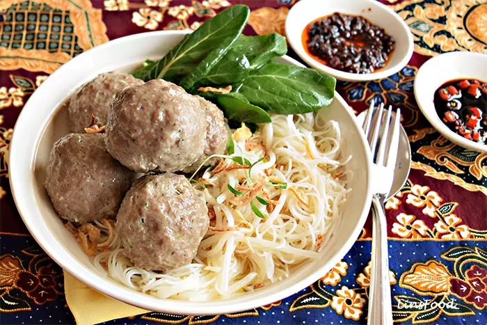

Bakso Recipe

Bakso - Indonesian Meatball soup
Bakso is Indonesian meatball, and is an extremely popular Indonesian food. It’s everywhere; you’re just as likely to find it being sold by street vendors (called kaki lima), mom and pop eateries and swanky restaurants in Indonesia. I love ordering these fresh from the street vendors. And having them with all manner of chilli condiments.
Tips
- Choose the good quality of beef which contains no fat & mince yourself at home. Do not buy minced beef which sold in supermarkets because this type of meat contains a lot of fat & the meatballs will be fallen apart when it boiled.
- At the beginning of boiling process, prepare 1 pc at first, boil & wait until the meatball well cooked and floating on the water surface, then taste it. Adjust the seasoning, add salt or sugar if necessary & mix the whole dough once again. Try to boil once more, taste it and so on until the flavor suit to your taste, then you can form the rest of the meatballs and boil them all. It is important to follow this step because once you've got them boiled, but the meatballs taste bland, then you can not rework them back or reverse the process. In a short word, your meatballs will go to the trash bin for sure!! I'm telling you from my own experience :-(.
- Be careful in choosing wonton wrapper. There are two kinds of wonton wrappers: For wonton soup and for fried wonton. If you use the wrong type, I guarantee you, within 2 hours, your fried wonton will be soft & limb eventually. (from personal experience as well ha ha … what a pity me).
Ingredients
- 500gr beef, good quality without fat, minced
- 100gr tapioca flour or corn starch
- 1 pc egg
- 3 tbsp fried shallots
- 2 cloves garlic
- ½ tsp pepper
- 1 tsp salt or to taste
- 1 tsp sugar or to taste
- 150ml ice water
Ingridients for the Soup
2l water
3 cloves garlic, bruised
½ tsp pepper powder
1 pc onion, finely chopped
1 pc spring onion, cut about 1 cm long
1 tsp beef broth powder
Salt to taste
Ingridients for the Fried Wonton
- 10 pc fried wonton wrapper (for frying)
Garnish and Condiments
- Fried shallots
- 2 pc spring onions or flat-leaf parsley, finely sliced
- Asian noodles/glass noodles, cooked
- Coy sum, blanched, set to drain
- Kecap manis
- Tomato ketchup
- Sambal Oelek
Making the Meatball
- Making Bakso: Put seasoning ingredients for Bakso: garlic, fried shallots, salt & sugar in a mortar/grinding stone and grind until smooth.(If you use blender: put the above ingredients in a blender, add 50 ml ice water then blend until smooth).
- Transfer the spice mixture into a large bowl, add the tapioca flour or corn starch, mix well with with a wooden spoon. Put a aside.
- Put the sliced beef & egg into the food processor and blend until smooth.
- Mix the tapioca mixture and beef paste, add the remaining ice water and process once again until the dough well mixed. You can also add the tapioka mixture into the beef paste and mix them together in the food processor.
- Meantime bring 3 lt/6 pints water in a large saucepan to boil. Add 2 tsp salt. Once it boiled, adjust the stove into medium heat.
- Form one of a meatball, let it boil & cook. Taste it and adjust the seasoning accordingly as I explain on the above tips. Put aside about 3 tbsp of dough for wonton filling if necessary.
- Form the rest of the dough into a round shape and boil until well cooked. The meatballs are finished when they are floating to the water surface.
Making Fried Wonton
- Place the wrapper in front of you, with one corner at the bottom so that it looks like a diamond. Put 1 tsp of the meatball dough somewhere in the middle of the wrapper.
- Fold it over to form a triangle shape.
- Pick up the 2 ends that have 45 degrees angle (the ones where the fold is), pinch & seal them with a dab of water on your finger.
- Deep-fry the wonton until golden brown.
Making the Soup
- Boil the broth or water. Stir-fry the garlic & chopped onion for the soup until fragrant. Add it to the broth.
- Add the spring onions, salt, pepper & broth powder. Adjust the seasoning, add salt & sugar if necessary.
- Add the coy sum and blanch shortly until just wilted. If necessary take away the blanched coysum from the pan and store separately too prevent overcooked.
Serving Method
- Put the noodle & vegetables in a bowl. Add the meatballs and pour in the soup over it. Garnish with sliced spring onion, fried shallot & fried wonton.
- Last but not least add kecap manis, sambal & salt to taste.